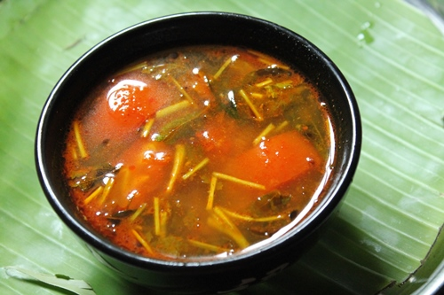

Rasam Recipe

Ingredients
- Garlic
- Cumin
- Tomato
- Green Chilly
- Oil
- Mustard seeds
- Tamarind paste
- Curry leaves
- Coriander leaves
- Turmeriuc, Chilli, Pepper
- Asofetida
- salt
Procedure
- Grind tomatoes, Cumin and Garlic in a mixer
- Heat oil in a pan and add Cumim Mustard Seeds, Asofetida, curry leaves
- Add the grinded paste from step 1
- Add turmeric, clilly and pepper powder along with salt
- Add some water and turmeric paste
- Add crushed garlic and let the mixture cook in low flame
- Once boiled add corriander leaves and turn off the stove
- Serve in style and show off
back